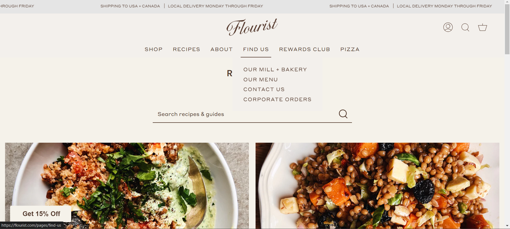

GitHub is an absolute nightmare for me, definitely one of my goals before the end of the block is to be comfortable with GitHub and its functionality. Many of my group members from last year know that I struggle with understanding how to use its capabilities due to a VERY rational fear that it will override something important and will be lost in the eternal void never to be found again. That was my experience when using GitHub for unity games, so far, using it in interactive media has also proved a challenge to be honest, but it is something I can learn by playing around with and having the occasional visit to stack overflow.
Weekly Readings
The reading I selected for the week was The Library of Babel by Jorge Luis Borges. I will be honest and say that it was a dense reading, personally, however I did enjoy the vivid and hyper-detailed descriptions present within it. It felt similar to walking through a labyrinth with no end from a science fiction point of view. How it relates to interactive media and the internet is that it replicates the feeling of the world wide web. It is endless and infinite and yet anything can be found.
I did attempt the reading about hypertext by Noah Wardrip-Fruin, however what was discussed in said reading was far above my current level to make sense of it.
History of The Web
While completing the module. We learnt about the history of the internet and the world wide web and how it came to be. Initially began by CERN the world wide web was a place used to store and access research papers and academia, hence it was primarily used by researchers or government. Since then, it exploded into what it is now. Similar to how it is hypothesized that the big bang was an explosion that created the universe and has since been expanding non-stop, so has the internet. Whilst still able to perform its uses to academia that is now just a miniscule of its current capabilities. The research stored on the web itself has evolved from only being in text form to now taking shape in videos, podcasts, short image posts with captions, etc and it will continue to evolve with time.
Goals
My goals for the course is to become proficient in the multiple programming languages available to us and to use it has a basis to learn more in the future to create a wider and diverse portfolio of projects and learn about the dev industry, not necessarily relating to games about also web and software. In the short term, I would like to be able to learn the languages in a consistent manner and become comfortable with anything Git related.
Blog Post 2
Folder Structure
While my website starts taking shape, the initial folder structure will comprise of the index page, which will have a small introductory paragraph, detailing what the website content will be. The index page will also contain hyperlinks to the blog document and an about document. The blog document will contain the content for the weekly blogs. I will probably divide each blog post into their own document, to make it more user friendly and organised. The about document will contain brief description of myself. The folder will also contain an image folder to contain any images I use within my document. If I have an idea to use other forms of media such as gifs or videos, they will also be contained in a separate folder so that it is organised and easier to access. A design folder will be created to display wireframe ideas and IxD documentation. Other than our website assignments, we will also have essays to complete, these essays will be displayed in its own document. Finally, the portfolio section will showcase the games I previously created.
Wireframes
My aim with the initial wireframes is to create a website with a simple and basic outline that allows me to understand how html elements can be used. As my knowledge of html and other languages develop, so to will the wireframes and the conceptual ideas for the website.
Wireframe planningWireframe planning
Inspo Websites
Image displaying ali abdaal website 
Image displaying the flourist website Image displaying haute stock website
The above websites are simple yet effectively communicate the intention of the host to the users. Navigation on the websites are made particularly accessible to the user. There is less conflict between their input and the desired output. I chose these as inspiration, as I feel my current design philosphy is based on user convenience- making the website easy for the user to feel in control of what they are doing. I've seen many websites, that stray too far away from conventions and while it makes for a great spectacle and artwork, the user is confused on how to navigate and find what they need.
Reflections on module
The reading for this week regarding hypertext was very dense for me. It took a few readings and research for me to understand and so I still feel I don't fully have a grasp on it. One of the standout points, was the discussion on the potential for hyperlinks to change narrative structures. We see today how narratives on the internet are conveyed, especially with a new platform such as TikTok, which has created entirely new sub genre's of content on the internet. Moulthrop spoke about the idea of "retrieving what was previously obsolesced", which refers to the revival of preservation of artefacts. We see on the internet how sites such as Google or Youtube allows us to access and preserve content or archives from years ago.
Coincedentally, I found this blog post, which helped with my understanding of some of the content of the reading
Interaction is the basis of the world wide web. Billions of interactions occur on a day-to-day basis on the web, between other users and between users and applications.Interaction is the response of something from a user’s input. How the user interprets the information provided to them and how they choose to interact with it. In web development terms, the user engages with the application with the intention of finding something and in turn the application must provide the necessary information to the user in a concise manner
Blog Post 3
Content of Site
"User alignment" refers to how the elements and content of a webpage are positioned based on the preferences of the user and the intentions of the developer. How an element is aligned can communicate the intentions of the developer to the user in a manner the developer sees appropriate. For example, a heading would typically be centered on the webpage to clearly indicate to the users that this is the focal point and what they should pay attention to. For my website, the directory and navigational links will be near to the top of the page, as this is what the user identifies first. Content of each page will consist of text and image elements. Paragraphs that require the most attention will be centred to provide focal attention.
Structure of Site
The focal point of the website will be displayed in the centre to gain focus and attention, whilst the other sections will be displayed near the top, spaced equally. The user should not have trouble navigating through the website, and finding what they want to should have minimal effort. If they wish to view the portfolio, it should be a maximum of 2 clicks away. The content should not be overwhelming to the user and should be organised for a seamless experience.
Semantic Markup
In terms of semantic markup, the website should contain elements that are friendly and accessible to users with disabilities that are using assistive screen readers. These help assisted users to understand the website and its content and have minimal difficulty navigating through it.